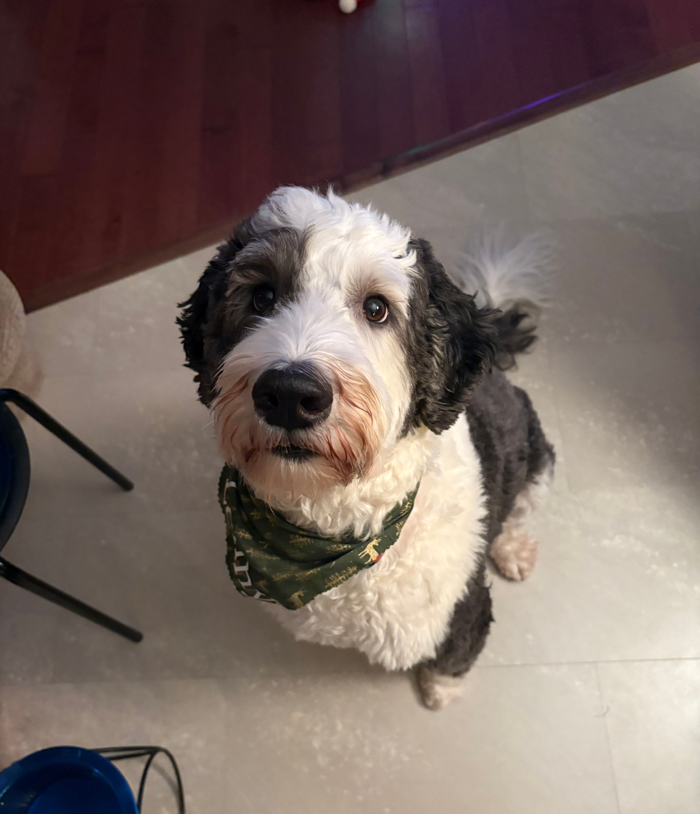

some activites I enjoy are reading, gaming, drawing, hanging out with friends, writing stories and watching movies. I also enjoy animal science like Zoology and paleontology. I also like marine biology but ironically have a pretty big fear of open ocean. I also from time to time enjoy editing video's, though don't do it as much as I did a year or two ago.
my favorite book is Project Hail Mary, I have a dog named Lenny, he's a sheep dog pootle mix, not really into sports, my favorite movies are How to Train you Dragon and Jurassic Park. I like spending time outside execpt in the spring. my favorite animal are Hyena's, unpopular choice I know.
In the midst of chaos, there is also opportunity
-Sun Tzu
